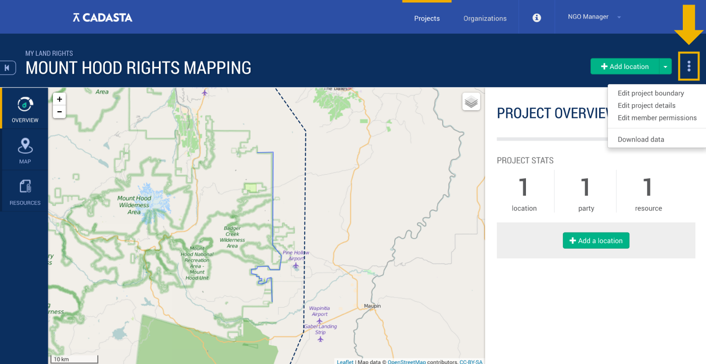
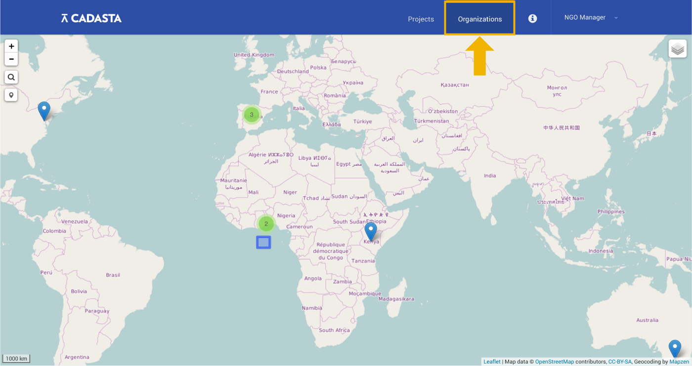
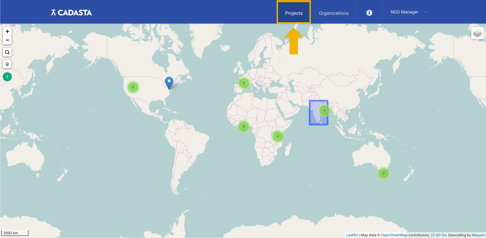

Frequently Asked Questions (FAQs)
Have a question? Your answer may be here, in one of the following sections:
If you can't find what you're looking for here or elsewhere in the documentation, please don't hesitate to contact us.
Cadasta & Data
Where does your map data come from?
The map data we use comes from OpenStreetMap, and the satellite imagery we use comes from Digital Globe.
Can anyone see my project once I've created it on Cadasta?
When setting up a project, you have the option to make it public or private. If you'd like to change a public project to a private one, you can do so by selecting Edit Project Details, which you can find under the three dots in the upper right of the platform:

By changing your project to private, only project members will be able to see it listed on the Projects page.
Once I upload my data to the Cadasta Platform, do I still own it?
Absolutely! Cadasta users will always retain full ownership of their data.
Visit People Before Data to learn more about our data policies.
Getting Around in the Cadasta Platform
How do I find my organization when I log in?
To find your organization when you log in, click on Organizations in the upper right.

On the page that follows, you’ll find all the organizations in Cadasta listed alphabetically. There, you can either scroll through the organizations until you find the one you're looking for, or you can search for your organization using the search bar.
How do I find my project once I log in?
To find your project once you log in, click on Projects in the upper right.

On the page that follows, you’ll find all the projects in Cadasta listed alphabetically. There, you can either scroll through the projects until you find the one you're looking for, or you can search for your project using the search bar.
Using the Questionnaire
I significantly modified my questionnaire after starting my project. Will it still work?
If you've only changed or added a few lines to your questionnaire, it should still be able to work with your project. However, if you've significantly modified your questionnaire, it may not work. If your questionnaire had changed a lot, it's probably a good idea to start a new project.
Why are some fields gray in the questionnaire while others are white?
Fields that are in gray indicate that they shouldn't be modified. Fields in white, however, easily can be. Read Questionnaires & Custom Data Collection to learn more about how to modify your questionnaire.
Can I delete or modify fields that are in gray?
You can, but it's not a good idea. The only exception is when creating a dropdown for toggling between GeoTrace, GeoShape, and GeoPoint options. Read more about that in the Advanced Customization section of the Questionnaires & Custom Data Collection page.
I need help customizing my questionnaire. Is there anyone who can help me?
Cadasta would be happy to help you customize your questionnaire. Contact us about this any time, and we'll get back to you as soon as we can.